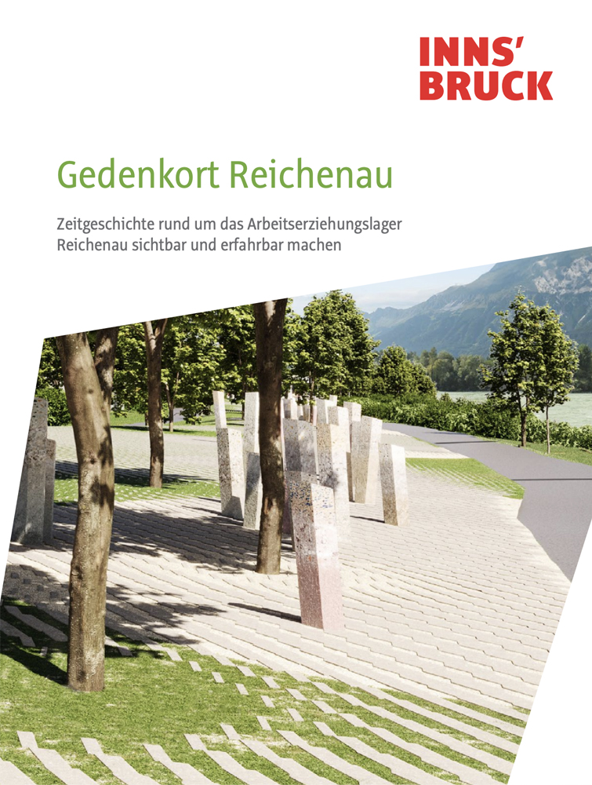
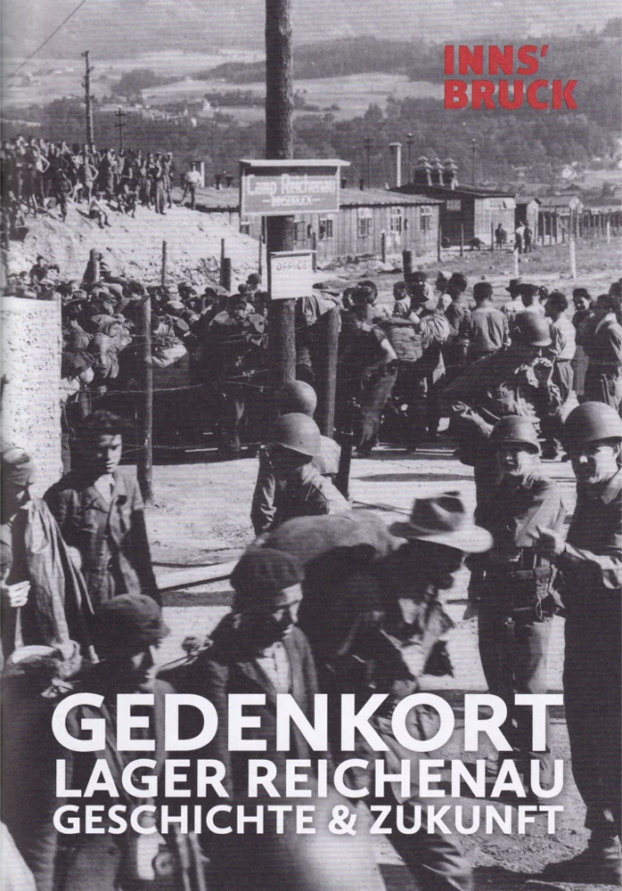
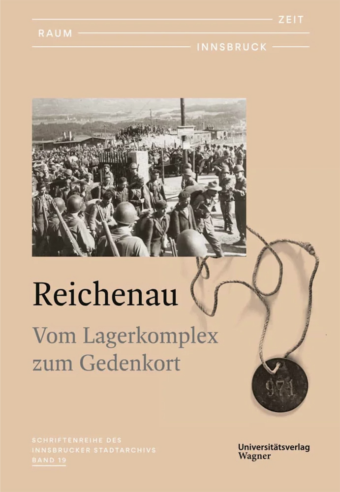
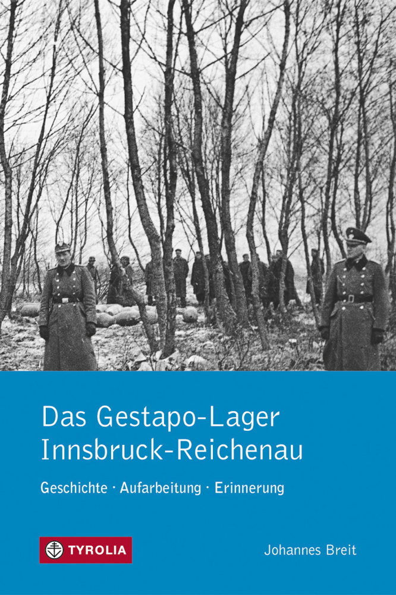
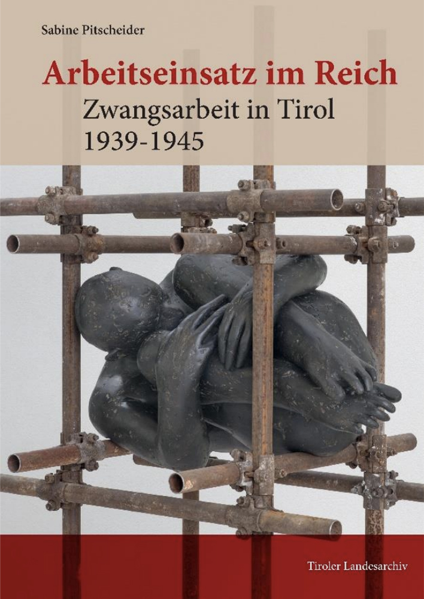
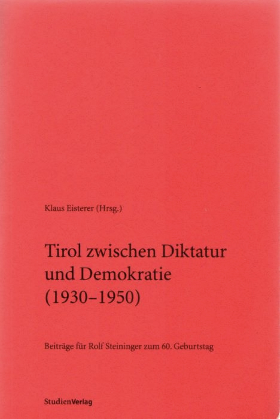
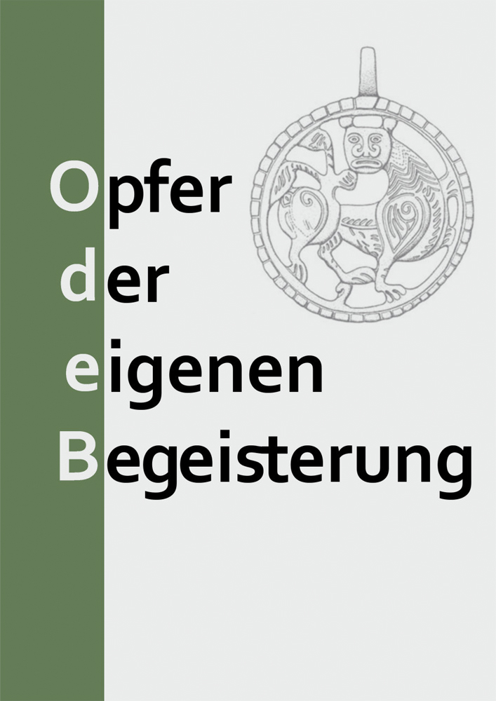

Publikationen
Wissenschaftliche Arbeiten, Forschungsbeiträge und Dokumentationen zum Arbeitserziehungslager Reichenau und der NS-Geschichte in Tirol.




Das Gestapo-Lager Innsbruck-Reichenau
Geschichte, Aufarbeitung und Erinnerung
Wien 2017

Arbeitseinsatz für das Reich
Zwangsarbeit in Tirol 1939-1945
Innsbruck 2025
Nationalsozialismus und Faschismus in Tirol und Südtirol
Opfer. Täter. Gegner
Innsbruck 2007

Ein KZ der Gestapo
Das Arbeitserziehungslager Reichenau bei Innsbruck. In: Klaus Eisterer (Hrsg.): Tirol zwischen Diktatur und Demokratie (1930–1950). Beiträge für Rolf Steininger zum 60. Geburtstag.
Innsbruck 2002, S. 77–113

Historisch-archäologische Perspektiven auf den NS-Lagerkomplex Innsbruck-Reichenau
In: Awad-Konrad Anna-Elisabeth et. al. (Hrsg.), Opfer der eigenen Begeisterung. Festschrift für Harald Stadler zum 65. Geburtstag.
Brixen 2024, S. 227-240
Es ist besser, nicht zu viel um sich zu schauen. Das Arbeitserziehungslager Innsbruck-Reichenau
2009
Video ansehen auf YouTube